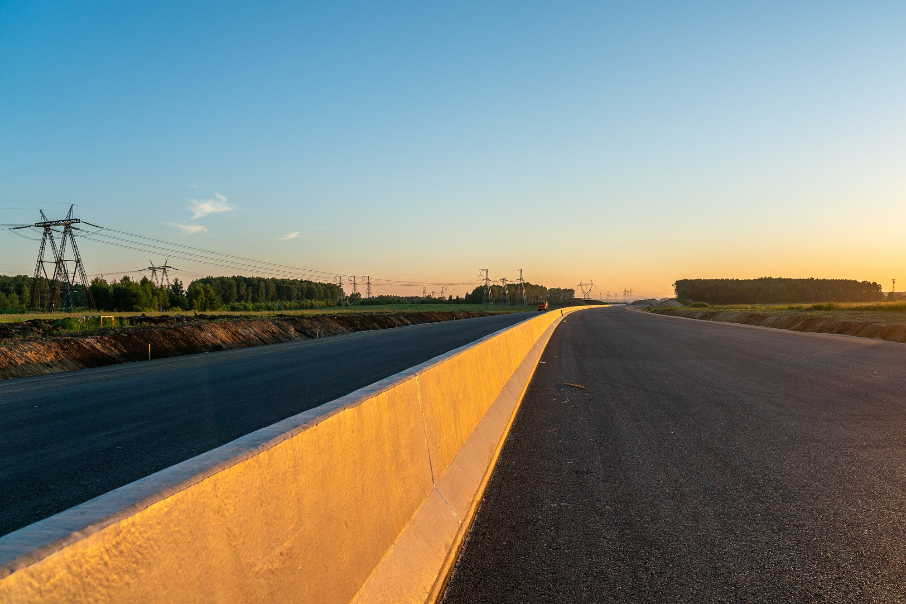

Вопрос · Светлана Ковальчук
Линейный объект, бюджетное финансирование по 223 ФЗ - 50% (остальные 50 % за счет Заказчика, то есть наше), измененные сметы (проект) прошли повторную экспертизу, получено положительное заключение гос экспертизы. Смета контракта скорректирована и заключено дополнительное соглашение на изменение стоимости объекта. У подрядчика опять выявились изменения в конструкции водопроводных колодцев. Строительство практически окончено. - вопрос 1 :Можно ли данные изменения оформить за счет непредвиденных расходов? или требуется опять пройти экспертизу? - вопрос 2: Можно ли оформить ДС на основании локальных смет или необходимо опять скорректировать смету контракта с учетом конструктивных изменений?